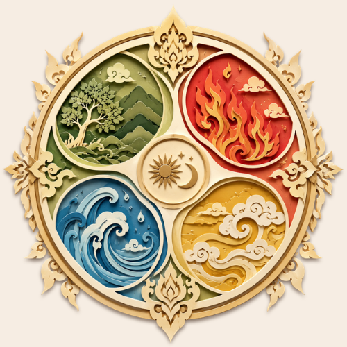
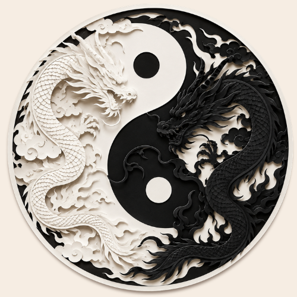
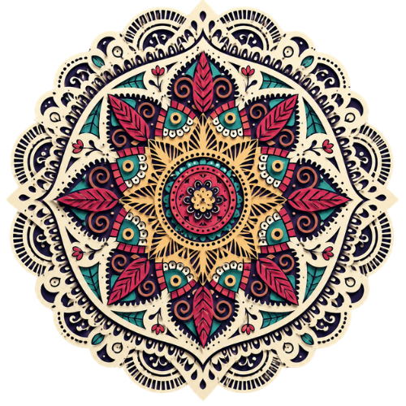
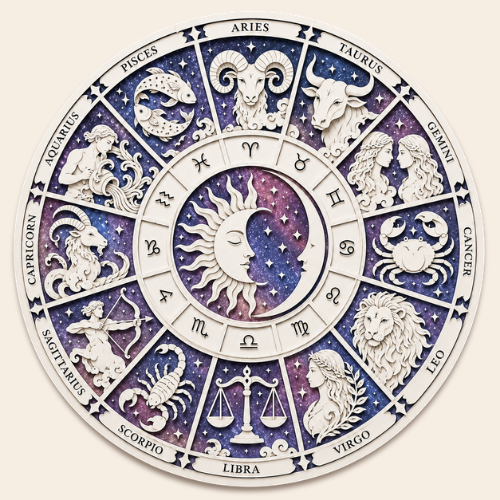

PROSPERCHARM
✦ เลือกบริการที่ต้องการ ✦
💎 เลือกแพ็กเกจ
ดูดวงไม่จำกัด ราคาคุ้มค่า
เลือกแพ็กเกจที่เหมาะกับคุณ
💫 รายครั้ง
29 บาท/ครั้ง
ไม่ต้องสมัครสมาชิก จ่ายแล้วใช้ได้เลย
- เลือกได้ทุกหมวด
- ใช้งานได้ทันที
🌙 Basic
99 บาท/เดือน
ดูได้ 5 ครั้ง ทุกหมวด
- 5 ครั้ง/เดือน ใช้ได้ทุกหมวด
- ประหยัดกว่ารายครั้ง 32%
ยอดนิยม
⭐ Pro
199 บาท/เดือน
ดูได้ 12 ครั้ง ทุกหมวด
- 12 ครั้ง/เดือน ใช้ได้ทุกหมวด
- ประหยัดกว่ารายครั้ง 43%
👑 Unlimited
299 บาท/เดือน
ดูได้ไม่จำกัด ทุกหมวด
- ไม่จำกัดครั้ง ทุกหมวด
- ไพ่ออราเคิล (เร็วๆ นี้)
- คุ้มสุดสำหรับสายมูตัวจริง
🎋 เขย่าเซียมซี
เลือกวัดที่ต้องการ
เลือกสายดวงที่คุณศรัทธา

วัดจีน
ฮ่องกง มาเก๊า

วัดไทย
สายมูไทย
ต้องสมัครก่อนนะคะ
สมัครแพ็กเกจเพื่อดูดวง
หรือจ่ายรายครั้ง 29 บาท
หรือจ่ายรายครั้ง 29 บาท
ซีกที่
✦ คำแนะนำ
🃏 ไพ่ทาโรต์แห่งชะตา
เลือกหัวข้อที่ต้องการรู้
ไพ่จะตอบคำถามในหัวข้อที่คุณเลือก
ความรัก
การงาน
การเงิน
สุขภาพ
ต้องสมัครก่อนนะคะ
สมัครแพ็กเกจเพื่อดูดวง
หรือจ่ายรายครั้ง 29 บาท
หรือจ่ายรายครั้ง 29 บาท
✦ คำแนะนำ
🐉 พิธีพ่อปู่ศรีสุทโธ
🐉
พิธีเปิดเลขพลังงาน
กับพ่อปู่ศรีสุทโธ
แห่งคำชะโนด ผู้ประทานโชคลาภ
กรุณากรอกวันเกิดเป็น พ.ศ. เช่น 16 สิงหาคม 2547
ดูดวงสมพงษ์
เลือกศาสตร์ที่ต้องการ
แต่ละศาสตร์มีวิธีอ่านดวงที่แตกต่างกัน

ศาสตร์ไทย
โหราศาสตร์ไทยโบราณ

ศาสตร์จีน
ดวงสมพงษ์หยินหยาง

ศาสตร์อินเดีย
โหราศาสตร์เวท

ศาสตร์ตะวันตก
Numerology & Astrology


💑
กำลังวิเคราะห์ดวงสมพงษ์...
คะแนนความเข้ากัน
✦ คำแนะนำ